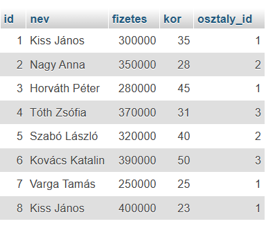
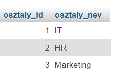
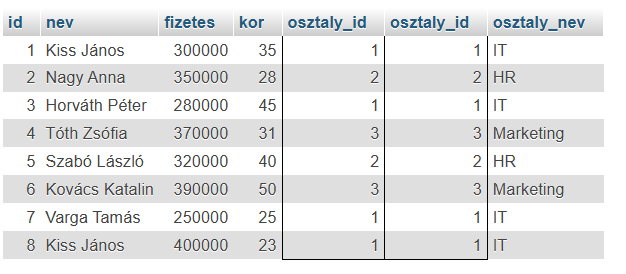
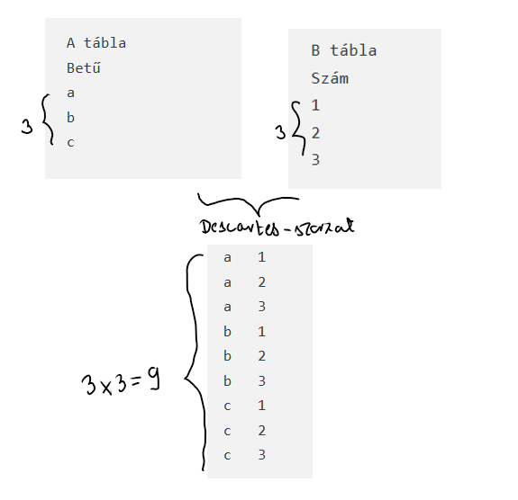
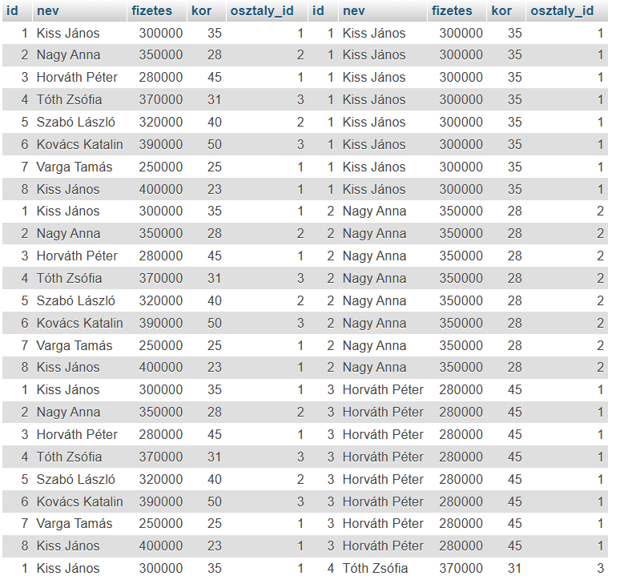
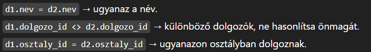
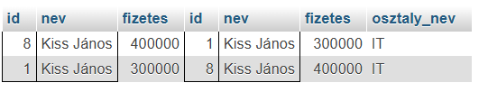

Ma már a világban szinte mindent adatokkal írunk le. Ezek az adatok nem különállóak, hanem sokféleképpen kapcsolódnak egymáshoz. Például egy iskola esetében a diákok, tanárok, tantárgyak és jegyek mind összefüggnek.
Adatbázison köznapi értelemben valamely rendezett, valamilyen szisztéma szerint tárolt adatokat értünk, melyek legtöbb esetben a számítógépen kerülnek eltárolásra. Tehát a valóság egy részéről szóló információkat egymással kapcsolatban álló táblákban tároljuk. Nem a teljes valóságot írjuk le, csak annak egy kisebb részét.
Az adattábla egy speciális táblázat. Az oszlopok azonos típusú adatokat tartalmaznak (például neveket vagy születési dátumokat), a sorok pedig egy-egy konkrét személyt vagy objektumot írnak le. A sorok és oszlopok együtt strukturált formában tárolják az adatokat.
Innen ered az SQL elnevezés is: az SQL a Structured Query Language (magyarul: strukturált lekérdező nyelv) kifejezés rövidítése. A „structured” kifejezés azt jelenti, hogy az adatokat előre meghatározott, logikus szerkezetben, egymással kapcsolatban álló táblákban tároljuk.
| Záradék | Leírás |
|---|---|
| SELECT | Megjelenítendő mezők kiválasztása |
| DISTINCT | Duplikált értékek eltávolítása |
| FROM | A használt tábla megadása |
| WHERE | Feltételek meghatározása (kapcsolatok is lehetnek) |
| GROUP BY | Csoportosítás megadott mezők szerint |
| HAVING | Összesítő függvényekre vonatkozó feltétel (pl.: HAVING COUNT(nezo.id)=1) |
| ORDER BY | Sorbarendezés (alapértelmezett növekvő, csökkenő: DESC) |
| LIMIT | Rekordok számának korlátozása |
| OFFSET | Rekordok kihagyása a lekérdezésből (pl.: LIMIT 1 OFFSET 1 a másodikat adja vissza) |
| Típus | Operátorok |
|---|---|
| Összehasonlító | >, <, <=, >=, <>, = |
| Aritmetikai | +, -, *, /, % |
| Logikai | AND, OR, NOT |
| Predikátum | Leírás |
|---|---|
| IN() | Értékhalmazban való keresés |
| LIKE '_a%' | Szöveges keresés mintára |
| BETWEEN x AND y | Tartományon belüli keresés |
| IS NULL | NULL érték vizsgálata |
Joker karakterek: _ (egy tetszőleges karakter), % (tetszőleges hosszúságú
szöveg, akár üres)
| Parancs | Leírás | Példa |
|---|---|---|
| INSERT | Rekord beszúrása | INSERT INTO `tablanev` (`mezo1`, `mezo2`) VALUES (ertek1, ertek2), (ertek3, ertek4);
|
| UPDATE | Rekord módosítása | UPDATE `tablanev` SET `mezo1` = uj_ertek WHERE `recordID` = 9; |
| DELETE | Rekord törlése | DELETE FROM `tablanev` WHERE `recordID` = 9; |
A GROUP BY az SQL-ben lehetővé teszi, hogy az adatokat csoportosítsuk egy vagy több oszlop
értékei szerint. Általában aggregált függvényekkel (SUM, AVG,
COUNT, MAX, MIN) együtt használjuk, hogy az adatok
csoportosítva jelenjenek meg.
Magyarázat:
oszlop1, [oszlop2]: a csoportosítás alapja (ezek szerint csoportosítja a rekordokat,
ide több mezőt is megadhatunk).osszesito_fuggveny: pl. SUM, AVG, COUNT,
MAX, MIN.
WHERE: opcionális, a rekordok szűrésére a csoportosítás előtt.Adott tábla: eladas
| rendeles_id | termek | mennyiseg | ar |
|---|---|---|---|
| 1 | A | 2 | 100 |
| 2 | B | 1 | 150 |
| 3 | A | 3 | 100 |
| 4 | B | 2 | 150 |
Lekérdezés:
SELECT termek, SUM(mennyiseg) AS osszes_mennyiseg
FROM eladas
GROUP BY termek;Eredmény:
| termek | osszes_mennyiseg |
|---|---|
| A | 5 |
| B | 3 |
Magyarázat: A termek oszlop értékei szerint csoportosítottunk, és az
SUM(mennyiseg) kiszámolta az adott termékre vonatkozó mennyiségek összegét.
Több oszlop szerint is lehet csoportosítani: GROUP BY oszlop1, oszlop2.
HAVING-et kell használni a csoportok szűrésére (ellentétben a
WHERE-rel, ami a sorokat szűri!!!).
Példa: csak a 10-nél nagyobb összes mennyiségeket jelenítjük meg:
SELECT termek, SUM(mennyiseg) AS osszes_mennyiseg
FROM eladas
GROUP BY termek
HAVING SUM(mennyiseg) > 10;Az allekérdezés (más néven subquery vagy belső lekérdezés) egy olyan SQL lekérdezés, amely egy másik lekérdezésen belül fut le. Az eredményét a külső lekérdezés használja fel, általában összehasonlítás vagy szűrés céljából.
„Hány megyében tanulnak kevesebben, mint Heves megyében?”
Legyen egy tanulok nevű tábla, amely tartalmazza a megyéket és a tanulók számát.
| Megye | Tanulók száma |
|---|---|
| Heves | 12000 |
| Borsod | 15000 |
| Nógrád | 8000 |
SELECT COUNT(megye) AS megyek_szama
FROM tanulok
WHERE tanulok_szama <
(SELECT tanulok_szama
FROM tanulok
WHERE megye = 'Heves');
A belső lekérdezés meghatározza, hogy hány tanuló van Heves megyében. Ez egy konkrét számot ad vissza (például 12000). Ez az érték nem jelenik meg külön eredményként, hanem a külső lekérdezés használja fel.
SELECT tanulok_szama
FROM tanulok
WHERE megye = 'Heves';
A külső lekérdezés megszámolja azokat a megyéket, ahol a tanulók száma kisebb, mint a Heves megyére kapott érték.
Gondoljuk át: „Számold meg azokat a megyéket, amelyek tanulóinak száma kisebb annál az értéknél, amit "Heves" belső lekérdezés visszaad.”
Az allekérdezések az emelt szintű érettségi adatbázis feladatainál gyakran előfordulnak, ezért érdemes több gyakorló feladaton keresztül begyakorolni.
Feladat: azonos nevű dolgozókat keresni ugyanabban az osztályban
(például két "Kiss János" nevű dolgozó a cégben, két különböző személy)


Ha a szokásos módon ugranánk neki a feladatnak, először összekötnénk a két táblát a WHERE
feltételben, majd esetleg elkezdenénk gondolkodni egy GROUP BY használatán.
SELECT *
FROM dolgozok, osztalyok
WHERE dolgozok.osztaly_id = osztalyok.osztaly_id

A GROUP BY csak összesíti a sorokat, és nem teszi lehetővé, hogy két különböző sort összevessünk ugyanabban a táblában. Itt a cél: azonos nevű dolgozókat ugyanazon osztályon két külön sorban találni – ezt csak self-join-nal lehet korrekt módon vizsgálni.
Ha két táblát csak felsorolunk a FROM-ban, és nem adunk meg feltételt, az SQL
Descartes-szorzatot készít:
minden sor az első táblából összepárosul minden sorral a második táblából.

WHERE feltételeket.A feladat megoldásához a dolgozok táblát kétszer használjuk alias-szal (d1,
d2), mert a feltétel két külön sorra vonatkozik(azonos név, azonos osztály)
SELECT *
FROM dolgozok as d1, dolgozok as d2


Mivel mindkét "Kiss János" párosítható a másikkal, a DISTINCT nélkül duplikált sorok
jelennek meg.

Egy kis trükk:d1.id < d2.id, így minden pár csak egyszer szerepel.
Ha a feladat kéri az osztály nevét, szükség lesz az osztaly táblára is.
Mivel csak a dolgozók osztaly_id-jához tartozó nevet kell lekérni, az osztaly
táblát egyszer csatoljuk:
SELECT d1.id, d1.nev, d1.fizetes, d2.id, d2.nev, d2.fizetes, osztalyok.osztaly_nev
FROM dolgozok AS d1, dolgozok AS d2, osztalyok
WHERE d1.nev = d2.nev
AND d1.id < d2.id
AND d1.osztaly_id = d2.osztaly_id
AND d1.osztaly_id = osztalyok.osztaly_id;